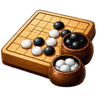

五子棋
🔇
🎙
⛶
⚙️
選擇玩法

橫、豎、斜任一方向連成 5 顆就贏
🌐 連線對戰
🎮 單機遊玩
連線 1 對 1 跟朋友下;單機遊玩不用連線,對手可以是電腦(
新手 / 普通 / 高手
三個強度)或坐旁邊的朋友(輪流點同一支手機)
單機遊玩 · 選設定
對手
🤖 電腦
👤 朋友
對手強度
🙂 新手
🤔 普通
😈 高手
棋盤大小
15×15
19×19
25×25
誰先下
⚫ 我先
⚪ 電腦先
🎲 隨機
開始對局
連線對戰
你的暱稱(必填)
建立新房間
＋ 建立房間
或 · 加入朋友的房間
偵測目前房間中…
🔍
–
🏳 認輸
大
🎤
語音
😀
等待中…
對戰設定
棋盤大小
15×15
19×19
25×25
每局換先手
🔄 每局換邊
🎲 每局重抽
連線計分
🏆 累積排行
🎯 搶勝
先到
－
3
＋
勝奪冠
🔒 賽季進行中,重設戰績後才能改目標
↺ 重設戰績
規則:黑棋先下,橫、豎、斜任一方向連成 5 顆即勝(無禁手)。棋盤下滿判和。
盤面越大越不容易頂到邊界;開局會自動放大到中央,雙指縮放或按 ⤢ 可看全盤。
19×19 · 🤔 普通
尚無戰績
大
↩ 悔棋
↻ 重新一局
準備中…
＋
⤢
－
準備好了
你贏了!
五子連線 🎉
👍
😂
😭
🤝
😀
🏆 開新賽季
繼續
離開房間
再來一局
回選單
先看看棋盤 👀
🏆 看結果
設定
外觀
主題
音效
開啟音效
音量
輪到你時震動
(手機)
背景音樂
開啟音樂
曲目
音量
語音（連線）
收到語音音量
我的語音
(自己錄 · 連線可送)
編輯
完成
五子棋 ·
· 開發者 Michael Ho
✕
傳給全部人
💬 一句話
🔊 語音短訊
⭐ 我的語音
送出
✕
我的語音
自己錄 3 秒短語音,連線時可在互動面板當按鈕送給別人。
只存在這台裝置
,換裝置不會跟著走。
儲存
🎤 錄一段新的(3 秒)
0 / 6
🔊 點我播放語音
🚪
離開房間?
確定要離開這個房間嗎?
留在房間
離開房間
🏳
認輸?
這局就直接算對手贏,確定嗎?
再想想
我認輸
⚠️
移出玩家?
確定要把這位玩家移出房間嗎?
取消
移出房間